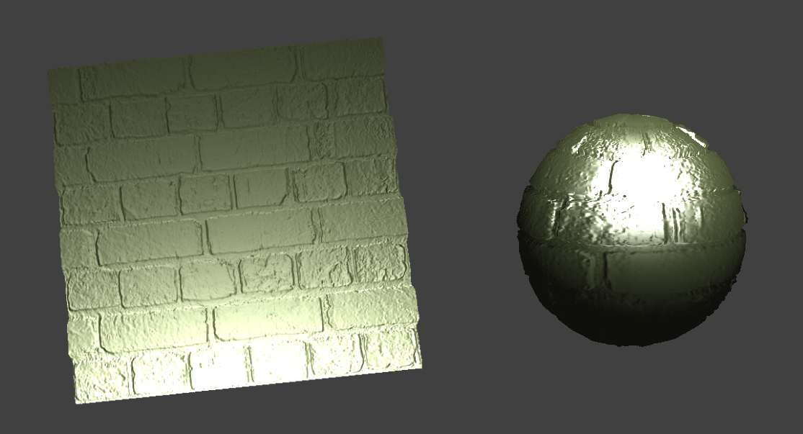

Overview
In this project, I follow the instruction and implemented a real-time cloth simulation using a mass-spring model. Initially, I constructed a mesh of point masses linked by springs to represent the cloth, then incorporated physical forces and constraints, along with numerical integration, to animate the cloth's movement. The simulation further evolved to handle collisions with other objects and self-collisions. Finally, I employed various GLSL shaders to enhance the cloth’s visual appeal, leveraging the GPU for efficient and realistic lighting effects. This undertaking provided a fascinating insight into animation, blending physics with computational shortcuts to create dynamic, visually captivating simulations. Here is the website link for this hw4
Part 1: Masses and Springs
This part 1 is the foundation for the cloth simulation, I need to construct a grid composed of numerous point masses. These point masses act as the basic elements that collectively form the cloth structure. I arranged them in a grid layout based on the cloth's designated width and height. Their placement varies slightly depending on whether the cloth is oriented horizontally or vertically, with a touch of randomness added to the vertical placement for added realism.
The next crucial step involved interconnecting these point masses with springs. In this part 1, I did three types of springs – structural, shearing, and bending – each serving a distinct purpose. Structural springs help maintain the grid's form, shearing springs manage diagonal stretching and compression, while bending springs counteract the cloth's tendency to bend. By meticulously integrating these springs, I ensured that our cloth simulation would not only accurately mimic the movements and reactions of real fabric but also display the complex interactions between these fundamental components.
Part 2: Simulation via numerical integration
Overview
What I did in Part 2:
Reset Forces:
Calculated the total external force on each point mass using
external_accelerations
and the mass of the point mass, applying Newton's Second Law (F = ma) for external forces.
Spring Correction Forces:
Implemented these by verifying if the spring's
constraint type is enabled
and then calculating the forces based on Hooke’s Law (F = -kx).Vector3D force =
ab.unit() * cp->ks * (current_length - spring.rest_length);
Verlet Integration for Position Computation:
Computed the new position of each
point mass using
Verlet integration and included a damping coefficient.
Adjusting Positions for Spring Length Constraints:
Modified the positions of
the point masses
associated with each spring to ensure the length does not exceed 110% of its rest length, skipping
over any pinned point masses.
Observations
Observations from Low to High ks: I noticed that with a smaller spring constant
ks, the cloth has more wrinkles. When ks is about 50, the cloth shows many small and fine wrinkles
but hardly any large ones. As ks increases, the cloth becomes stiffer. Setting an excessively high
value like 500,000, however, leads to erratic behavior and prevents the cloth from reaching a state
of static equilibrium.
I noticed that with a smaller spring constant
ks, the cloth has more wrinkles. When ks is about 50, the cloth shows many small and fine wrinkles
but hardly any large ones. As ks increases, the cloth becomes stiffer. Setting an excessively high
value like 500,000, however, leads to erratic behavior and prevents the cloth from reaching a state
of static equilibrium.
Observations from Low to High Density:
 A higher density value results in fewer
wrinkles, giving the cloth a taut appearance. Conversely, a very low density makes the cloth
resemble soft and lightweight materials like taffeta linings and gauzy fabric.
A higher density value results in fewer
wrinkles, giving the cloth a taut appearance. Conversely, a very low density makes the cloth
resemble soft and lightweight materials like taffeta linings and gauzy fabric.
Observations from Low to High Damping: Damping significantly influences the bounciness of the cloth. The closer the damping is to 0, the more the cloth shakes and the longer it oscillates. A higher damping value results in a calmer cloth movement.
In summary, a low ks results in a more flexible and wrinkled cloth, while a high ks leads to stiffness. Density impacts the cloth's response to gravity and external forces, and damping controls the duration of post-disturbance oscillations.
Here is the cloth (pinned 2 and 4 ) in its default final resting state!
Part 3: Handling collisions with other objects
In Part 3, I implemented collision handling for two primitives in the cloth simulation: spheres and planes. This enhancement adds a more dynamic and realistic behavior, allowing the cloth to interact naturally with these objects.
3.1: Handling collisions with spheres
The first task was to tackle collisions between the cloth and spherical objects. The approach was straightforward yet effective:
- Collision Detection: I calculated the distance from each PointMass to the center of a sphere to detect collisions.
- Intersection Point: I calculated the intersection point on the sphere's surface for each colliding PointMass.
- Correction Vector: This vector adjusted the PointMass's position to the sphere's surface.
- Friction Adjustment: I incorporated friction into the correction, enhancing realism.
Above are images of cloth with varying ks as they collide with the sphere. As ks increases, the cloth becomes stiffer.
3.2: Handling collisions with planes
Next, I focused on plane collisions:
- Collision Detection: Check if a PointMass crossed the plane since the last step.
- Intersection Point: Compute the intersection point for each PointMass that crossed the plane.
- Correction Vector: Adjust the correction vector with a small offset to avoid sticking to the plane.
- Friction Adjustment: Friction was applied to the correction vector for realism.

Integrating these methods into the Cloth::simulate function ensured realistic interactions between the cloth and other objects. The cloth now appropriately drapes over spheres and reacts to planes in the environment.
Part 4: Handling self-collisions
In Part 4, I implemented self-collisions utilizing spatial hashing. Spatial hashing is notably advantageous as it ensures constant time complexity (O(1)) for locating objects on the screen, irrespective of the scale of the world rendered. Although most modern game engines restrict direct internal construction of objects, learning this technique is still beneficial. The method is particularly efficient because hash mapping accurately calculates the value of the target position from a specified key, enhancing both precision and performance in complex simulations.
4.1. Implement Cloth::hash_position
The purpose of this function is to map each point mass's position to a specific 3D box. This aids in generating a unique key to minimize hash collisions. Several methods were explored:
- Simple Linear Combination: A straightforward method using linear combinations
of coordinates with prime numbers.
float hash = prime1 * truncatedX + prime2 * truncatedY + prime3 * truncatedZ; - Cantor Pairing Function: A mathematically robust approach that uniquely encodes two natural numbers into a single natural number. For three dimensions, this method pairs two coordinates and then pairs the result with the third.
- Base Conversion Method: This technique involves a base conversion to ensure
uniqueness.
x + (y * base) + (z * base * base);Here, 'base' would typically be the maximum of num_width_points, num_height_points, and num_depth_points.
4.2. Develop Cloth::build_spatial_map
The build_spatial_map function is responsible for creating a spatial map of point masses. Each point mass is categorized based on its hashed position. This map is pivotal for efficient collision detection in the cloth simulation.
4.3. Code Cloth::self_collide
The self_collide function is designed to detect and resolve collisions between point masses within the same hashed space. The implementation involves looping through all point masses. For each point mass, the spatial hash is used to find nearby points. A collision check is then conducted to determine if any nearby point masses are within a specified threshold distance. If a collision is detected, it is resolved by computing a correction vector, which is then used to update the position of the point masses involved. An important aspect of this function is ensuring that a point mass does not collide with itself.
Self-Collision Progression
The following screenshots document the progression of the cloth simulation as it falls and folds onto itself.
Self-Collision 1: density = 1, ks = 1000
At a density of 1 and ks (spring constant) of 1000, the initial self-collision showcases the cloth's lightweight properties. It starts to interact with itself in a very subtle and gentle manner. The low density results in the cloth exhibiting minimal gravitational pull, causing it to fall slowly and gracefully. The folds created are delicate and barely noticeable, reflecting the cloth's lightweight and soft texture.
Self-Collision 2: density = 15, ks = 5000
With the density increased to 15 and ks adjusted to 5000, the cloth’s behavior during mid-fall becomes more pronounced. The higher density leads to a faster and more dynamic interaction with itself, resulting in more complex and defined folding patterns. The increased ks value contributes to a stiffer cloth structure, so the folds appear more rigid and less fluid compared to the initial state. The cloth starts showing signs of realistic draping and collision with its own layers.
Self-Collision 3: density = 30, ks = 7500
At the highest density of 30 and ks of 7500, the cloth reaches a more restful state, although it remains slightly bouncy due to the substantial ks value. The increased density causes the cloth to fall quickly, leading to more dynamic and complex self-collisions. The high ks contributes to the cloth's ability to maintain its shape under stress, resulting in more pronounced and defined folds. Despite reaching a restful state, the cloth retains a level of bounciness and resistance, indicative of its thick and robust texture.
Here is a GIF for better view:
Part 5: Cloth Sim
Overview
Understanding Shader Programs and Their Components
Shader Programs: A shader program in computer graphics is a kind of special program designed to run on a GPU (Graphics Processing Unit). It very efficient at processing large batches of data in parallel, making them perfect for handling complex visual tasks like rendering 3D scenes.
Vertex and Fragment Shaders: Within a shader program, there are two fundamental types that work together to produce stunning visual effects: vertex and fragment shaders.
Vertex Shader: The first stage in the shading process is the vertex shader. It takes each vertex of a 3D object (defined by its coordinates, normal, color, etc.) and performs operations like transformations and lighting calculations. This stage is responsible for determining where vertices should appear on the screen, laying the groundwork for how the object will look.
Fragment Shader: Also known as a pixel shader, the fragment shader comes after the vertex shader in the pipeline. It is responsible for determining the color of individual pixels by calculating effects like lighting and shadows based on the information passed from the vertex shader. The output is the final color that we see on the screen.
By working in tandem, vertex and fragment shaders create the overall appearance of 3D objects, including lighting and material effects.
The Blinn-Phong Shading Model
Blinn-Phong Shading: This is a shading model used to simulate how light interacts with surfaces. The model breaks down the light into three components:
- Ambient Lighting: This is the basic, non-directional light present in a scene. It acts as a baseline light that ensures objects are never completely dark and doesn't depend on the light source direction or viewer's perspective.
- Diffuse Lighting: This represents the light that scatters evenly across a surface. It depends on the angle of the light hitting the object, creating varying intensities and making the shape of the object more discernible.
- Specular Lighting: This simulates the bright spots of light that appear on shiny objects. This component is highly dependent on the viewer's position and the surface's properties, like shininess.
In my shader implementation, I can manipulate these components independently to understand their impact:
- Ambient Only Screenshot: This shows the object under ambient light. The obejct
seems to be very dark is because I set
vec3 ambient = u_color.rgb * 0.1;and also it's default gray color. If set as 0.5, it won't be so dark. - Diffuse Only Screenshot: This highlights how the object interacts with light, emphasizing its shape and contours.
- Specular Only Screenshot: This focuses on the shiny parts where the light source directly reflects.
- Full Blinn-Phong Model Screenshot: This combines all three components, showcasing a realistically lit object.
Texture Mapping
Texture Mapping with a Custom Texture: Texture mapping is about applying images (textures) to 3D objects to add details like colors, patterns, and even bumpiness. By replacing the default texture in the /textures/ directory with my custom one, I can observe how textures dramatically alter an object's appearance.
Screenshot with Custom Texture: This will demonstrate my shader's ability to map a 2D image onto a 3D object's surface accurately.
Bump Mapping vs. Displacement Mapping
Bump Mapping and Displacement Mapping: Both techniques aim to enhance the realism of 3D objects by simulating surface details. Bump mapping alters how light interacts with a surface to create the illusion of depth, while displacement mapping actually modifies the object's geometry based on the texture.
- Bump Mapping on Cloth and Sphere Screenshots: These will show the effect of bump mapping on different objects, illustrating how it simulates a textured surface without changing the geometry.
- Displacement Mapping on Sphere Screenshots: Here, I can compare the actual geometric changes on the sphere. 

The different levels of coarseness (-o 16 -a 16 vs. -o 128 -a 128) will show how displacement mapping behaves with varying mesh densities.
5.5 Environment-Mapped Reflections - Mirror Shader
For this part, I want to create a mirror-like effect on surfaces by reflecting the surrounding environment. This can be achieved by using an environment map (cubemap) to simulate light reflections on a shiny surface.
- Shader Setup: A fragment shader (Mirror.frag) is used to handle the reflection logic, considering the camera's position, the fragment's position on the surface, and the surface normal.
- Calculating Reflection Vector: The view direction vector (wo) is calculated from the fragment's position towards the camera.
- Reflecting the View Vector: Using GLSL's reflect function, the view vector is reflected around the surface normal to obtain the reflection vector (wi).
- Sampling the Environment Map: The reflection vector is used to fetch the corresponding color from the cubemap.
- Outputting the Reflected Color: The fetched color is set as the output color of the fragment (out_color), creating the mirror effect on the surface.
Now in with this mirror-like reflections on surfaces, object can dynamically reflecting the surrounding environment. As the camera moves or objects rotate, the reflections change, mimicking the behavior of a real mirror in a 3D environment.